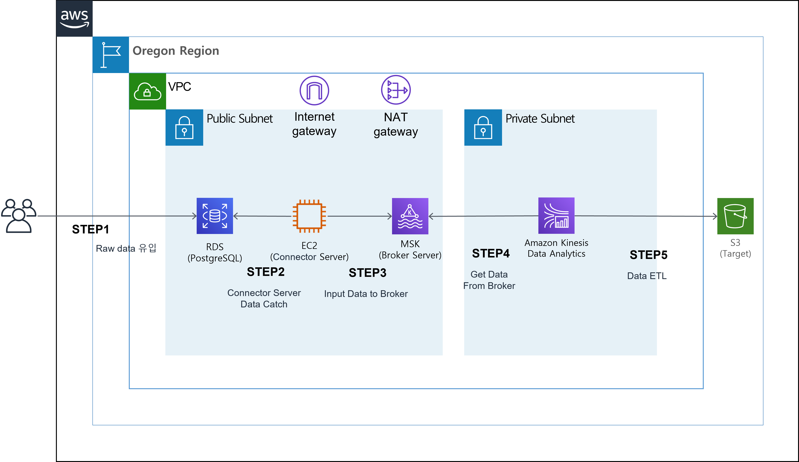
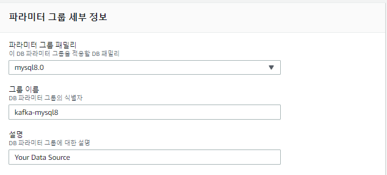
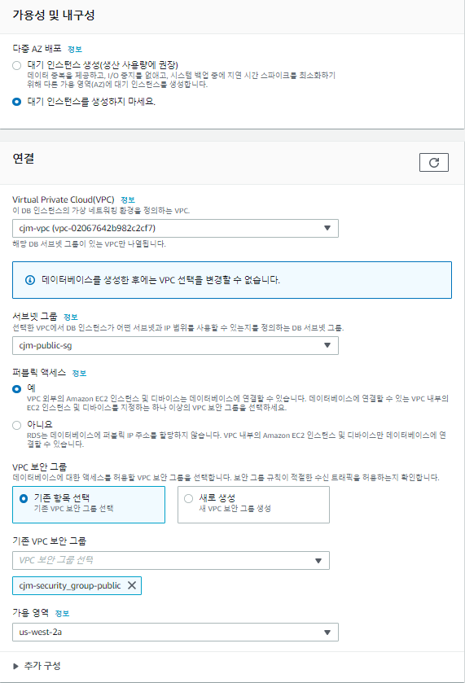

AWS에서 Streaming Data를 ETL 작업 후 S3에 저장하기

DB에 실시간 들어오는 Data ( Row )를 Kafka Connector (debezium, jdbc ... etc)를 이용하여 MSK로 Ingest 및 KDA로 ETL 작업 후에 S3에 적재 시나리오
모든 구성은 oregon(us-west-2)에서 구성하였습니다.
Resource :
- RDS(MySQL)
- MSK
- Kinesis Data Analytics
- S3
- 네트워크 구성 (VPC, Public Subnet , Private Subnet, Routing Table , IGW, NATGW, Security Group)
- EC2
- Iam role
1. 네트워크 구성
VPC
- 이름 : {VPC_NME}
- IPv4 CIDR 블록 :
10.0.0.0/16
Subnet
Public Subnet1
- IPv4 CIDR 블록 :
10.0.1.0/24 - 가용 영역 :
us-west-2a
- IPv4 CIDR 블록 :
Public Subnet2
- IPv4 CIDR 블록 :
10.0.2.0/24 - 가용 영역 :
us-west-2c
- IPv4 CIDR 블록 :
Private Subnet1
- IPv4 CIDR 블록 :
10.0.3.0/24 - 가용 영역 :
us-west-2a
- IPv4 CIDR 블록 :
Private Subnet1
- IPv4 CIDR 블록 :
10.0.4.0/24 - 가용 영역 :
us-west-2c
- IPv4 CIDR 블록 :
Internet Gateway (IGW)
- VPC : 상단에서 생성한 VPC_ID
Elastic IP (EIP)
- 네트워크 경계 그룹 :
us-west-2 - 퍼블릭 IPv4 주소 풀 :
Amazon IPv4 주소 풀
- 네트워크 경계 그룹 :
NAT Gateway (NATG)
- 서브넷 : {Public Subnet1_ID}
- 연결 유형 :
퍼블릭 - 탄력적 IP 주소 : 상단에서 생성한 EIP_ID
Routing Table
Public RT
VPC : 상단에서 생성한 VPC_ID
라우팅
대상 대상 상태 전파됨 VPC_CIDR (10.0.0.0/16) local 활성 아니요 0.0.0.0/0 IGW_ID 활성 아니요 서브넷 연결
서브넷 ID IPv4 CIDR IPv6 CIDR Public Subnet1_ID Public Subnet1_CIDR (10.0.1.0/24) – Public Subnet2_ID Public Subnet2_CIDR (10.0.2.0/24) –
Private RT
VPC : 상단에서 생성한 VPC_ID
라우팅
대상 대상 상태 전파됨 VPC_CIDR local 활성 아니요 0.0.0.0/0 NATG_ID 활성 아니요 서브넷 연결
서브넷 ID IPv4 CIDR IPv6 CIDR Private Subnet1_ID Private Subnet1_CIDR (10.0.3.0/24) – Private Subnet2_ID Private Subnet2_CIDR (10.0.4.0/24) –
Security Group (SG)
유형 프로토콜 포트 범위 소스 설명 - 선택 사항 모든 트래픽 전체 전체 10.0.0.0/16 (VPC CIDR) VPC CIDR BLOCK 모든 트래픽 전체 전체 해당 {SG-ID} refer to self for msk
2. Source 구성 ( RDS MySQL )
Subnet Group 생성
이름 :
{YOUR_Subnet_Group_Name}설명 :
Subnet Group for Data SourceVPC :
{Your_VPC}가용 영역 :
us-west-2a,us-west-2c서브넷 :
{Your_Subnet_A},{Your_Subnet_C}

파라미터 그룹 생성
RDS의 기본 파라미터 그룹은 bin log을 읽을 수 없도록 설정이 되어 있습니다. 따라서 bin log를 읽을 수 있도록 파라미터 그룹을 생성하고 RDS에 적용해야 합니다. 최초 파라미터 그룹을 생성 후 수정 진행합니다.
파라미터 그룹 패밀리 :
mysql8.0그룹 이름 :
{Your_Parameter_Group_Name}설명 :
Your Data Source

Binlog configuration properties 다음 링크를 통해 설정값을 확인 및 수정합니다. 생성 된 파라미터 그룹을 변경합니다.
이름 변경 전 값 변경 후 값 binlog_format MIXED ROW binlog_row_image full, minimal, noblob full RDS 생성
데이터베이스 생성 방식 선택 :
표준 생성엔진 옵션 :
MySQL버전 :
MySQL.8.0.23
템플릿 :
프로덕션DB 인스턴스 식별자 :
{Your_DB_ID}마스터 사용자 이름 :
admin암호 :
Bespin12!
DB 인스턴스 클래스 :
버스터블 클래스(t 클래스 포함)/db.t3.micro2 (최소 사양)
가용성 및 내구성 :
대기 인스턴스를 생성하지 마세요.VPC : {Subnet_Group 과 동일한 VPC}
서브넷 그룹 : `{위에서 생성한 Subnet_Group}
퍼블릭 액세스 :
예VPC 보안 그룹 :
{Your_Security_Group}가용 영역 :
us-west-2a
데이터베이스 인증 :
암호 인증
초기 데이터베이스 : test
파라미터 그룹 :
{위에서 생성한 파라미터 그룹}
3. MSK
MSK는 Apache Kafka를 토대로 구현된 서비스이나 Apache Kafka에 비해 제약 사항이 많습니다. 하지만 Cloud Native한 workflow 구현을 위해 MSK로 Kafka cluster를 구성하였습니다.
MSK Configuration 생성
msk config 생성 해당 링크로 이동하여
create cluster configuration을 누릅니다.
config 구성은 다음과 같습니다.
Configuration name :
{Config_Name}Kafka version :
{To-Be_Kafka_Version}code :
auto.create.topics.enable=truedefault.replication.factor=3min.insync.replicas=2num.io.threads=8num.network.threads=5num.partitions=1num.replica.fetchers=2replica.lag.time.max.ms=30000socket.receive.buffer.bytes=102400socket.request.max.bytes=104857600socket.send.buffer.bytes=102400unclean.leader.election.enable=truezookeeper.session.timeout.ms=18000delete.topic.enable=true
MSK Cluster 생성
Creation method :
Custom createCluster name :
{Your_Kafka_Cluster_Name}Apache Kafka version :
{Same_With_Your_Configuration}
Cluster configuration :
Custom configuration이미 Custom하게 생성을 해놨으므로 Custom 생성이 없다면
MSK default configuration사용Cluster configuration :
{Your_MSK_Configuration}Configuration revision :
Revision 1Configuration 업데이트 이력이 없다면 1을 선택하고, 이력이 있다면 최신 버전을 선택합니다
최신일수록 숫자가 높습니다.

VPC :
{Your_VPC}Number of Zones :
22 이상 가능하면 3을 권장 합니다.
설정한 숫자만큼 HA 구성이 가능합니다.
Zone :
{Available_Zone_Name}Subnet :
{Your_Subnet}
Security groups :
{Your_SG}Broker type :
{Type_Your_Broker}Number of brokers per Zone :
1zone 생성할 갯수를 설정하는 것이므로 zone을 2로 설정하고 broker number르 1로 설정하면
총 2개가 생성됩니다.
EBS storage volume per broker :
1000broker당 설정할 Storage 입니다.
MSK를 생성한 이후에 Storage에 대한 Auto Scaling을 적용할 수 있습니다.
Access control method :
IAM access control
Encrypt data in transit :
Enable encryption within the clusterEncrypt data at rest :
Use AWS managed CMK
Amazon CloudWatch metrics for this cluster :
Basic monitoringOpen monitoring with Prometheus :
enableBroker log delivery :
Deliver to Amazon CloudWatch Logs,Deliver to Amazon S3,Deliver to Amazon Kinesis Data Firehose용도에 따라 Cloudwatch S3에 Log를 남길 수 있고 추가 Service에 연결하려면 Firehose를 통해 연결 가능합니다.

생성 완료되는 데 약 15분 정도 소요됩니다.
4. Kafka Connector 서버 구성
Connector Server를 위한 별도의 EC2가 필요하면 현 작업을 통해 구성되는 Connector로 Data Source를 가져와 Kafka Cluster에 전달 합니다.
Kafka Tutorial 해당 링크에 따라 Kafka를 설치합니다.
xxxxxxxxxx# Install Java: sudo yum install -y java-1.8.0
# Create Kafka dir:mkdir kafka
# Move dircd kafka
# Get Kafka: Version에 맞는 Kafka를 Download 합니다.wget https://archive.apache.org/dist/kafka/2.2.1/kafka_2.12-2.2.1.tgz
# Extract Kafka: tar -xzf kafka_2.12-2.2.1.tgz
# 카프카 설치 완료# ===
# Topic 생성# msk 정보를 불러옵니다 zookeeper 및 broker ip 획득aws kafka describe-cluster --cluster-arn "{ClusterArn}" --region
# mytest라는 topic을 생성합니다.../bin/kafka-topics.sh --create --zookeeper "{ZookeeperConnectString}" --replication-factor 2 --partitions 1 --topic mytest
# 그 외에 알아두면 좋은 command# Delete Topic:../bin/kafka-topics.sh --delete --zookeeper "{ZookeeperConnectString}" --replication-factor 2 --partitions 1 --topic mytest
# Show Topic List:../bin/kafka-topics.sh --list --zookeeper "{ZookeeperConnectString}" --replication-factor 2 --partitions 1 --topic AWSKafkaTutorialTopic
# cousumer 그룹 확인 ../bin/kafka-consumer-groups.sh --bootstrap-server {Bootstrap servers} --list
# cousumer 상태와 오프셋 ../bin/kafka-consumer-groups.sh --bootstrap-server {Bootstrap servers} --group {consumer group id} --describe
# counsumer group 삭제 ../bin/kafka-consumer-groups.sh --bootstrap-server {Bootstrap servers} --delete --group {consumer group id}
# ===# 카프카 connector 다운 및 설정# 용도에 맞게 connector를 다운 로드 합니다.# connector는 archive라는 이름으로 저장됩니다.
# s3-source 다운wget https://api.hub.confluent.io/api/plugins/confluentinc/kafka-connect-s3-source/versions/1.3.2/archive# s3-sink 다운wget https://api.hub.confluent.io/api/plugins/confluentinc/kafka-connect-s3/versions/5.5.2/archive# debezium 다운wget https://api.hub.confluent.io/api/plugins/debezium/debezium-connector-mysql/versions/1.3.1/archive# jdbc sink&source 다운wget https://api.hub.confluent.io/api/plugins/confluentinc/kafka-connect-jdbc/versions/10.0.1/archive# avro convter connector 다운wget https://api.hub.confluent.io/api/plugins/confluentinc/kafka-connect-avro-converter/versions/5.5.2/archive
# 압축해제unzip archive
# plugin path dir 생성mkdir -p plugins/kafka-connect-s3-sinkmkdir -p plugins/kafka-connect-s3-sourcemkdir -p plugins/debezium mkdir -p plugins/jdbc
# 각 connector를 plugin path로 이동cp confluentinc-kafka-connect-s3-5.5.2/lib/* plugins/kafka-connect-s3-sink/cp confluentinc-kafka-connect-s3-source-1.3.2/lib/* plugins/kafka-connect-s3-source/cp debezium-debezium-connector-mysql-1.3.1/lib/* plugins/debezium/cp confluentinc-kafka-connect-jdbc-10.0.1/lib/* plugins/jdbc/cp confluentinc-kafka-connect-avro-converter-5.5.2/lib/* plugins/jdbc/
# connector 다운 완료
cd kafka_2.12-2.2.1/configxxxxxxxxxxvi connect.propertiesxxxxxxxxxx# Kafka broker IP addresses to connect tobootstrap.servers={MSK broker IP}
# Path to directory containing the connector jar and dependenciesplugin.path=/home/ec2-user/kafka/plugins/
# Converters to use to convert keys and valueskey.converter=org.apache.kafka.connect.json.JsonConvertervalue.converter=org.apache.kafka.connect.json.JsonConverterkey.converter.schemas.enable=falsevalue.converter.schemas.enable=false
# The internal converters Kafka Connect uses for storing offset and configuration datainternal.key.converter=org.apache.kafka.connect.json.JsonConverterinternal.value.converter=org.apache.kafka.connect.json.JsonConverterinternal.key.converter.schemas.enable=falseinternal.value.converter.schemas.enable=falseoffset.storage.file.filename=/tmp/connect.offsets
# connect internal topic names, auto-created if not existsconfig.storage.topic=connect-configsoffset.storage.topic=connect-offsetsstatus.storage.topic=connect-status
# internal topic replication factors - auto 3x replication in Azure Storageconfig.storage.replication.factor=2offset.storage.replication.factor=2status.storage.replication.factor=2
group.id=connect-cluster-groupx
vi debezium.jsonxxxxxxxxxx{ "name": "debezium", "config": { "connector.class": "io.debezium.connector.mysql.MySqlConnector", "tasks.max": "1", "database.hostname": "{RDS URL}", "database.port": "3306", "database.user": "admin", "database.password": "Bespin12!", "database.server.id": "1509343511", "database.server.name": "mytest", "database.whitelist": "test", "database.history.kafka.topic": "dbhistory.test", "database.history.kafka.bootstrap.servers": "{MSK broker IP}", "snapshot.mode":"schema_only_recovery", "transforms": "route", "transforms.route.type": "org.apache.kafka.connect.transforms.RegexRouter", "transforms.route.regex": "([^.]+)\\.([^.]+)\\.([^.]+)", "transforms.route.replacement": "$3" }}jdbc source connector 설정 : JDBC Connect 대상에서 Source를 받아옵니다
x
vi jdbc-source.jsonxxxxxxxxxx{ "name": "jdbc-source", "config": { "connector.class": "io.confluent.connect.jdbc.JdbcSourceConnector", "tasks.max": "1", "connection.url": "jdbc:mysql://{RDS URL}:3306/test", "mode": "timestamp", "connection.user" : "admin", "connection.password" : "Bespin12!", "table.whitelist" : "test.todo", "timestamp.column.name":"EVENT_TIME", "topic.prefix": "mytest." }}jdbc sink connector 설정 : Target을 JDBC Connect 대상으로 연결합니다
x
vi jdbc-sink.jsonxxxxxxxxxx{ "name": "jdbc-sink", "config": { "connector.class": "io.confluent.connect.jdbc.JdbcSinkConnector", "tasks.max": "1", "topics": "mytest", "connection.url": "jdbc:mysql://{RDS URL}:3306/{target DB}?user=admin&password=Bespin12!", "transforms.unwrap.type": "io.debezium.transforms.UnwrapFromEnvelope", "auto.create": "true", "insert.mode": "upsert", "transforms": "unwrap", "pk.fields": "id", "pk.mode": "record_value" }}s3 sink connector 설정 : Target이 S3가 됩니다
xxxxxxxxxxvi s3-sink.jsonxxxxxxxxxx{ "name": "s3-sink", "config": { "connector.class": "io.confluent.connect.s3.S3SinkConnector", "tasks.max": "1", "topics": "mytest.todo", "s3.region": "us-west-2", "s3.bucket.name": "{Bucket_Name}", "s3.compression.type": "gzip", "s3.part.siz": "5242880", "flush.size": "1", "storage.class": "io.confluent.connect.s3.storage.S3Storage", "format.class": "io.confluent.connect.s3.format.json.JsonFormat", "schema.generator.class": "io.confluent.connect.storage.hive.schema.DefaultSchemaGenerator", "partitioner.class": "io.confluent.connect.storage.partitioner.TimeBasedPartitioner", "partition.duration.ms":"3600000", "path.format":"YYYY-MM-dd", "locale":"KR", "timezone":"UTC", "schema.compatibility":"NONE" }}Connect와 Connector 설정이 모두 완료 되었습니다. 이제 Connect를 실행시켜보겠습니다.
# Connect 정보가 있는 dir로 이동cd ~/kafka/kafka_2.12-2.2.1/config/
# Connect 실행../bin/connect-distributed.sh connect.properties 새 터미널을 실행 시킵니다. 방금 실행시킨 Connect에 Connector를 실행 시킬겁니다.
# Connector 정보가 있는 dir로 이동cd ~/kafka/kafka_2.12-2.2.1/config/
# jdbc source connector를 등록할 예정입니다.# jdbc source connector는 source db를 토픽으로 만들어 해당 토픽으로 생성하고 해당 토픽에 데이터를 넘깁니다.# 토픽 이름 : {topic.prefix}{Table}# 예 : mytest.todo# 따라서 위의 jdbc-source.json 기준으로 mytest.todo 라는 토픽에 데이터가 전송됩니다.# 하지만 msk는 topic을 자동으로 생성해주지 않습니다.(config를 변경해도 생성 X)# 따라서 해당 토픽을 미리 생성합니다.# 생성하지 않을 시 다음과 같은 에러 메시지가 발생합니다.# [2020-12-15 04:23:02,187] WARN [Producer clientId=producer-4] Error while fetching metadata with correlation id 142 : {mytest.todo=INVALID_REPLICATION_FACTOR} (org.apache.kafka.clients.NetworkClient:1031)
# 토픽 생성../bin/kafka-topics.sh --create --zookeeper "z-1.cjm-cluster.kht7sx.c7.kafka.us-west-2.amazonaws.com:2181,z-3.cjm-cluster.kht7sx.c7.kafka.us-west-2.amazonaws.com:2181,z-2.cjm-cluster.kht7sx.c7.kafka.us-west-2.amazonaws.com:2181" --replication-factor 2 --partitions 1 --topic mytest.todo
# connector 등록 (jdbc source)curl -i -X POST -H "Accept:application/json" -H "Content-Type:application/json" http://localhost:8083/connectors/ -d @jdbc-source.json
# connector가 등록되고 Table 정보가 전송됩니다.
# 그 외에 알면 좋은 command# ===# connector 삭제curl -X DELETE localhost:8083/connectors/{connector name}
# connecotr listcurl http://localhost:8083/connector-plugins | python -m json.tool
# 등록된 connector listcurl http:/localhost:8083/connectors | python -m json.tool
5. Application jar
다른 EC2 서버에 접속합니다. aws에서 제공하는 코드를 살짝 수정하여 jar 로 build할 예정입니다.
사전 작업
xxxxxxxxxx# git 설치sudo yum install -y git
# 소스 코드 다운git clone https://github.com/aws-samples/amazon-kinesis-data-analytics-java-examples
# aws kinesis data analytics flink application을 만들기 위해서는 maven 및 java 11이 설치되어야 합니다.# change the directory to /opt folder.cd /opt
# install mavenwget https://downloads.apache.org/maven/maven-3/3.6.3/binaries/apache-maven-3.6.3-bin.tar.gz
# unzip tarsudo tar -xvzf apache-maven-3.6.3-bin.tar.gz
# Edit the /etc/environment file and add the following environment variable:sudo nano /etc/environmentM2_HOME="/opt/apache-maven-3.6.3"
# After the modification, press Ctrl + O to save the changes and Ctrl + X to exit nano.
# Update the mvn command:sudo update-alternatives --install "/usr/bin/mvn" "mvn" "/opt/apache-maven-3.6.3/bin/mvn" 0sudo update-alternatives --set mvn /opt/apache-maven-3.6.3/bin/mvn
# Add Bash completion to mvn so that you can complete complex Maven commands by hitting Tab multiple times.sudo wget https://raw.github.com/dimaj/maven-bash-completion/master/bash_completion.bash --output-document /etc/bash_completion.d/mvn
# Logout and login to the computer and check the Maven version using the following command.mvn --version
# Java installcd ~/sudo yum install -y java-11-openjdk-develapplication 생성 Jar
xxxxxxxxxx# KafkaConnectors 프로젝트를 사용할 예정입니다.cd ~/amazon-kinesis-data-analytics-java-examples/KafkaConnectors/src/main/java/com/amazonaws/services/kinesisanalytics/
# code 수정vi KafkaGettingStartedJob.javapackage com.amazonaws.services.kinesisanalytics;xxxxxxxxxximport com.amazonaws.services.kinesisanalytics.runtime.KinesisAnalyticsRuntime;import org.apache.flink.api.common.serialization.SimpleStringSchema;import org.apache.flink.streaming.api.datastream.DataStream;import org.apache.flink.streaming.api.environment.StreamExecutionEnvironment;import org.apache.flink.streaming.connectors.kafka.FlinkKafkaConsumer;import org.apache.flink.streaming.connectors.kafka.FlinkKafkaProducer;import org.apache.flink.streaming.connectors.kafka.internals.KeyedSerializationSchemaWrapper;import org.apache.flink.streaming.util.serialization.KeyedSerializationSchema;import org.apache.flink.streaming.api.functions.sink.filesystem.StreamingFileSink;import org.apache.flink.api.common.serialization.SimpleStringEncoder;import org.apache.flink.api.common.functions.FlatMapFunction;import org.apache.flink.api.java.tuple.Tuple2;import org.apache.flink.streaming.api.windowing.time.Time;import org.apache.flink.core.fs.Path;import org.apache.flink.util.Collector;import java.util.Properties;import java.io.IOException;import java.util.Map;import java.util.Properties;
public class KafkaGettingStartedJob {
private static final String region = "{region-name}"; private static final String s3SinkPath = "s3a://{bucket-name}/data/"; private static DataStream<String> createKafkaSourceFromApplicationProperties(StreamExecutionEnvironment env) throws IOException { Map<String, Properties> applicationProperties = KinesisAnalyticsRuntime.getApplicationProperties(); return env.addSource(new FlinkKafkaConsumer<>((String) applicationProperties.get("KafkaSource").get("topic"), new SimpleStringSchema(), applicationProperties.get("KafkaSource"))); }
private static StreamingFileSink<String> createS3SinkFromStaticConfig() { final StreamingFileSink<String> sink = StreamingFileSink .forRowFormat(new Path(s3SinkPath), new SimpleStringEncoder<String>("UTF-8")) .build(); return sink; }
public static void main(String[] args) throws Exception { // set up the streaming execution environment final StreamExecutionEnvironment env = StreamExecutionEnvironment.getExecutionEnvironment(); DataStream<String> input = createKafkaSourceFromApplicationProperties(env);
// Add sink input.flatMap(new Tokenizer()) // Tokenizer for generating words .keyBy(0) // Logically partition the stream for each word .timeWindow(Time.minutes(1)) // Tumbling window definition .sum(1) // Sum the number of words per partition .map(value -> value.f0 + " count: " + value.f1.toString() + "\n") .addSink(createS3SinkFromStaticConfig());
env.execute("Flink S3 Streaming Sink Job"); } public static final class Tokenizer implements FlatMapFunction<String, Tuple2<String, Integer>> {
public void flatMap(String value, Collector<Tuple2<String, Integer>> out) { String[] tokens = value.toLowerCase().split("\\W+"); for (String token : tokens) { if (token.length() > 0) { out.collect(new Tuple2<>(token, 1)); } } } }}xxxxxxxxxx# code 수정 후 프로젝트 dir로 이동cd ~/amazon-kinesis-data-analytics-java-examples/KafkaConnectors/
# build jarmvn package -Dflink.version=1.11.1
# jar 파일 확인cd ~/amazon-kinesis-data-analytics-java-examples/KafkaConnectors/target/
# KafkaGettingStartedJob-1.0.jar 가 생성됩니다.# 해당 jar를 s3 bucket upload합니다.aws s3 cp KafkaGettingStartedJob-1.0.jar s3://{bucket-name}6. IAM Role
역할 생성
Iam에서 좌측 역할 탭을 클릭하여 역할 만들기를 합니다.
신뢰할 수 있는 유형의 개체 선택 : AWS 서비스
사용 사례 선택 : Kinesis > Kinesis Analytics
다음 : 권한
연결해야 하는 정책 리스트
- AmazonEC2FullAccess (vpc 접근 정책)
- AmazonS3FullAccess (s3 data put 정책)
- AmazonKinesisFullAccess (kinesis 접근 정책)
- CloudWatchLogsFullAccess (log 접근 정책)
- AmazonMSKFullAccess (msk 접근 정책)
역할 이름 : analytics-role
7. Kinesis Data Analytics
KDA는 반드시 private subnet에 구성되어야 합니다.
MSK 콘솔에서 KDA Flink 생성
- 애플리케이션 이름 :
flink-msk - 액세스 권한 : Kinesis Data Analytics에서 위임할 수 있는 IAM 역할 중에서 선택
- IAM 역할 :
{위에서 Role} - 템플릿 :
개발
애플리케이션 생성
애플리케이션이 생성되면 구성을 선택합니다.
Amazon S3 버킷 : 상단에서 생성한 bucket
Amazon S3 객체의 경로 : {jar file이 있는 경로 및 jar file 이름}
속성
그룹 추가그룹 ID : KafkaSource
키-값 페어:
키 값 bootstrap.servers {Broker - ip} group.id {consumer group id} topic {topic-name} ex) mytest.todo
- vpc 연결 : 서브넷을 private으로 변경합니다.
업데이트 후 실행
실행 후에 생성 RDS에 데이터를 insert하면 S3에 {bucket}/data/에 저장됩니다.